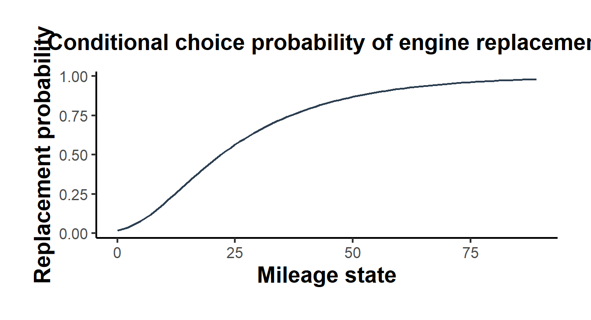

Chapter 61 Dynamic Discrete Choice
The structural demand models of the companion chapter describe agents who solve a static problem: a consumer compares the products available today and picks the one that maximizes current utility. Many economic decisions are not like that. A firm deciding whether to replace a worn machine, a household deciding whether to renew a durable good, a worker deciding whether to retrain, and a patient deciding whether to seek treatment all weigh a payoff today against the discounted stream of payoffs that the choice sets in motion. The decision is discrete, the agent is forward looking, and the relevant state evolves stochastically. Dynamic discrete choice models supply the econometric machinery for exactly this class of problems, and they remain the workhorse of structural microeconometrics in labor, industrial organization, and health (Aguirregabiria and Mira 2010).
This chapter develops the canonical framework, the optimal stopping model of bus engine replacement introduced by Rust (1987), and the two estimation traditions it spawned. The first, the nested fixed point algorithm, solves the agent’s dynamic program exactly inside an outer likelihood maximization. The second, the family of conditional choice probability estimators, sidesteps the repeated dynamic programming solve by reading the value function off observed choice frequencies. The chapter closes with the identification questions that any applied user must confront, above all the difficulty of recovering the discount factor.
61.1 The Dynamic Optimization Problem
An agent observes a state and chooses an action in each period to maximize the expected present discounted value of a stream of payoffs. Let the action in period \(t\) be \(a_t \in \{0, 1, \dots, J\}\) and the state be \((x_t, \varepsilon_t)\), where \(x_t\) is a state observed by the econometrician and \(\varepsilon_t = (\varepsilon_{0t}, \dots, \varepsilon_{Jt})\) is a vector of choice-specific shocks observed by the agent but not the econometrician. The per-period payoff from choosing action \(a\) is
\[u(x_t, a) + \varepsilon_{a t},\]
additively separable in the observed flow utility \(u(x_t, a)\) and the private shock \(\varepsilon_{a t}\). The agent discounts the future at rate \(\beta \in (0, 1)\) and the observed state evolves according to a controlled Markov transition \(p(x_{t+1} \mid x_t, a_t)\). The agent’s problem is to choose a decision rule mapping states to actions that solves
\[ \max_{\{a_t\}} \; \mathbb{E} \left[ \sum_{\tau = t}^{\infty} \beta^{\tau - t} \big( u(x_\tau, a_\tau) + \varepsilon_{a_\tau \tau} \big) \,\middle|\, x_t, \varepsilon_t \right]. \]
61.1.1 The Bellman Equation
Optimality is characterized by the Bellman equation. Writing the value function \(V(x, \varepsilon)\) as the maximized expected discounted payoff from state \((x, \varepsilon)\) onward,
\[ V(x, \varepsilon) = \max_{a \in \{0, \dots, J\}} \Big\{ u(x, a) + \varepsilon_a + \beta \, \mathbb{E}\big[ V(x', \varepsilon') \mid x, a \big] \Big\}. \]
It is convenient to integrate the private shocks out of the value function. Define the ex ante or integrated value function \(\bar V(x) = \mathbb{E}_\varepsilon V(x, \varepsilon)\), the value before the period’s shocks are realized. The conditional value function collects the deterministic part of the payoff from taking action \(a\) in state \(x\) and behaving optimally thereafter,
\[ v(x, a) = u(x, a) + \beta \sum_{x'} \bar V(x') \, p(x' \mid x, a), \tag{61.1} \]
so that \(V(x, \varepsilon) = \max_a \{ v(x, a) + \varepsilon_a \}\). The conditional value function is the central object of the literature: choices depend on the differences \(v(x, a) - v(x, 0)\), and most estimators are organized around recovering these differences.
61.1.2 The Type I Extreme Value Assumption and the Log-Sum Formula
The model becomes tractable once the private shocks \(\varepsilon_{a t}\) are assumed independent across actions and time and drawn from the Type I extreme value (Gumbel) distribution, the same distributional assumption that delivers the multinomial logit choice probabilities of the static discrete-choice chapter. Two closed-form results follow. First, the probability of choosing action \(a\) in state \(x\) is the multinomial logit applied to the conditional value functions,
\[ P(a \mid x) = \frac{\exp\big(v(x, a)\big)}{\sum_{j=0}^{J} \exp\big(v(x, j)\big)}. \tag{61.2} \]
Second, the expectation of the maximum, which is what the integrated value function requires, has the log-sum or social-surplus form (Rust 1987)
\[ \bar V(x) = \mathbb{E}_\varepsilon \max_a \{ v(x, a) + \varepsilon_a \} = \gamma + \log \sum_{j=0}^{J} \exp\big(v(x, j)\big), \tag{61.3} \]
where \(\gamma \approx 0.5772\) is Euler’s constant. Equations (61.1) and (61.3) together form a fixed point in \(\bar V\): the integrated value feeds the conditional values, whose log-sum returns the integrated value. Solving that fixed point is the computational heart of the model.
61.1.3 The Rust Bus Engine Model
Rust (1987) cast the maintenance decisions of Harold Zurcher, superintendent of a Madison, Wisconsin bus company, as an optimal stopping problem. Each month Zurcher observes the accumulated mileage \(x_t\) on a bus engine and chooses between two actions: keep the current engine, \(a = 0\), or replace it, \(a = 1\). Replacement is a regenerative action that resets mileage to zero and incurs a fixed cost. Keeping the engine avoids that cost but exposes the operator to rising expected maintenance costs as mileage accumulates. The flow utility, written as negative costs, is
\[ u(x, a) = \begin{cases} - \theta_1 \, x & \text{if } a = 0 \;\; (\text{keep}), \\[4pt] - R & \text{if } a = 1 \;\; (\text{replace}), \end{cases} \]
where \(\theta_1 > 0\) scales the per-period operating and maintenance cost in mileage and \(R > 0\) is the lump-sum cost of installing a replacement engine. Mileage is discretized into a finite grid of states. When the engine is kept, mileage advances by a few grid cells with estimated probabilities; when the engine is replaced, the state regenerates to the first cell and then advances from there. This regenerative optimal-stopping structure, a binary forward-looking choice with a clean reset, is why the bus engine model has become the teaching and testing ground for the entire field.
61.2 Estimation by Nested Fixed Point
Rust (1987) estimated the structural parameters \(\theta = (\theta_1, R)\) by maximum likelihood, using the choice probabilities in equation (61.2) as the likelihood contributions. The complication is that those probabilities depend on the conditional value functions, which depend on the integrated value function, which is itself the solution of the fixed-point problem above and so depends on \(\theta\). The nested fixed point algorithm (NFXP) handles this with two nested loops.
The inner loop solves the agent’s dynamic program for a candidate parameter vector. Given \(\theta\) it iterates the Bellman operator
\[ \bar V(x) \;\leftarrow\; \gamma + \log \sum_{j} \exp\Big( u(x, j; \theta) + \beta \sum_{x'} \bar V(x') \, p(x' \mid x, j) \Big) \]
to convergence. Because the operator is a contraction with modulus \(\beta\), value-function iteration converges geometrically, and Rust’s original implementation accelerated the tail with Newton-Kantorovich steps. The fixed point delivers \(\bar V(\cdot; \theta)\) and hence the conditional value functions and the choice probabilities \(P(a \mid x; \theta)\).
The outer loop maximizes the log-likelihood of the observed panel of decisions \(\{a_{it}, x_{it}\}\) over \(\theta\),
\[ \ell(\theta) = \sum_{i} \sum_{t} \log P\big(a_{it} \mid x_{it}; \theta\big), \]
calling the inner loop afresh at every trial value of \(\theta\) proposed by the optimizer. The estimator is the full-solution maximum likelihood estimator: it is statistically efficient because it uses the exact model-implied likelihood, but it pays for that efficiency by solving the dynamic program many times. The transition probabilities \(p(x' \mid x, a)\) are usually estimated separately in a first step from the observed mileage increments, which do not depend on the utility parameters, so the likelihood that NFXP maximizes is a partial likelihood for \(\theta\) given the estimated transitions.
61.3 Conditional Choice Probability Estimation
The computational burden of repeatedly solving the dynamic program motivated a second tradition that avoids the full solution. The key insight, due to Hotz and Miller (1993), is that the structure of the model can be inverted: the differences in conditional value functions, which are what choices depend on, can be recovered directly from conditional choice probabilities that are observed in the data.
61.3.1 The Hotz-Miller Inversion
Under the Type I extreme value assumption, the choice-probability formula in equation (61.2) can be solved for value differences. Taking logs of the probability of any action \(a\) relative to a reference action, the log odds against the reference equal the difference in conditional value functions,
\[ \log P(a \mid x) - \log P(0 \mid x) = v(x, a) - v(x, 0). \tag{61.4} \]
More generally Hotz and Miller (1993) show that for any discrete-choice model in this class there is a one-to-one map from the vector of conditional choice probabilities at a state to the vector of value differences at that state; the logit case in equation (61.4) is the most-used instance. A further identity, sometimes called the Hotz-Miller representation, expresses the integrated value \(\bar V(x)\) as flow utility plus a correction term that is itself a known function of the choice probabilities, \(\bar V(x) = v(x, a) + \gamma - \log P(a \mid x)\) for any \(a\). Because the right-hand sides of these relations are built from CCPs that can be estimated nonparametrically from observed choice frequencies, the value function never has to be computed by iterating the Bellman operator.
61.3.2 The Hotz-Miller-Sanders-Smith Simulator
The inversion gives value differences at states that appear in the data, but constructing the conditional value function in equation (61.1) still requires the discounted continuation value. Hotz et al. (1994) supply a simulation method for that piece. Starting from a state and a hypothetical first action, one draws forward paths of states and actions using the estimated transition probabilities and the estimated CCPs, and along each simulated path the future flow utilities and the analytic correction terms accumulate into an unbiased estimate of the continuation value. Averaging over simulated paths yields a simulated conditional value function, which plugs into a choice-probability or moment objective. The estimator trades the exact inner-loop solve of NFXP for forward simulation, and because the simulated paths can be drawn once and reused, it is typically far cheaper.
61.3.3 Unobserved Heterogeneity: Arcidiacono-Miller
A serious limitation of the basic CCP approach is that it reads value differences off observed choice frequencies, which is valid only if agents in the same observed state \(x\) truly share the same conditional choice probabilities. Persistent unobserved heterogeneity, permanently high-cost versus low-cost operators, for example, breaks that assumption. Arcidiacono and Miller (2011) extend CCP estimation to models with time-invariant unobserved types. They posit a finite mixture over a small number of latent types and estimate type-specific CCPs and structural parameters by an expectation-maximization (EM) algorithm: the E step forms posterior probabilities that each agent belongs to each type given the data and current parameters, and the M step updates the type-specific CCPs and structural parameters using those posteriors as weights. A representation result in their paper shows that the continuation values can be written using CCPs evaluated only a finite number of periods ahead, which keeps the simulation light even with heterogeneity. The Arcidiacono-Miller estimator is now the standard tool when unobserved heterogeneity matters and the full-solution likelihood would be prohibitive.
61.3.4 The NFXP Versus CCP Tradeoff
The two traditions trade computation against efficiency. NFXP solves the dynamic program exactly, so its likelihood is the true model likelihood and the estimator attains the Cramer-Rao bound, but each likelihood evaluation pays for a full inner-loop solve, and the cost compounds with the size of the state space and the number of optimizer iterations. CCP estimators replace the inner loop with first-stage nonparametric choice probabilities and forward simulation, so they are dramatically faster, but they inherit sampling noise from the first-stage CCPs and are in general less efficient, sometimes materially so when CCPs are imprecisely estimated in thinly populated states. In practice the choice hinges on the size of the problem: small, clean models are estimated by NFXP for its efficiency and transparency, while large state spaces, rich heterogeneity, or many players push applied researchers toward CCP methods.
61.4 Alternative Estimators: NPL, MPEC, and Euler Equations
The nested fixed point and the two-step CCP estimator anchor two ends of a spectrum, and several influential estimators sit between them, trading the efficiency of full solution against the speed of the two-step approach while avoiding the latter’s reliance on noisy first-stage probabilities.
The nested pseudo-likelihood (NPL) estimator of Aguirregabiria and Mira (2002) swaps the order of the two NFXP loops. Rather than solving the dynamic program to convergence inside every likelihood evaluation, it begins from an initial guess of the choice probabilities, takes a single policy-iteration step to update the value function and the implied probabilities, maximizes the pseudo-likelihood given that update, and repeats the recursion to convergence. At a fixed point the NPL estimator coincides with the full-solution maximum likelihood estimator and recovers its efficiency, but each iteration is far cheaper than a full inner-loop solve. The recursion does not always converge, and the conditions under which it does, together with stabilized variants, are characterized by Kasahara and Shimotsu (2012); the same NPL idea became the foundation for estimating dynamic games (Aguirregabiria and Mira 2007).
A different route eliminates the inner loop entirely by recasting estimation as constrained optimization. The mathematical-programming-with-equilibrium-constraints (MPEC) approach of Su and Judd (2012) maximizes the likelihood over the structural parameters and the value function jointly, imposing the Bellman equation as a set of equality constraints rather than solving it repeatedly. A modern constrained-optimization solver handles the constraints directly, and because the dynamic program is never solved as a subroutine, MPEC can be dramatically faster than NFXP on large problems; the same idea accelerates random-coefficients demand estimation (Dube et al. 2012). The relative merits of MPEC and a carefully implemented NFXP were the subject of a pointed methodological exchange, whose resolution is that both are correct and the choice is one of convenience and problem structure (Iskhakov et al. 2016).
A third route avoids the value function altogether. Just as the consumption Euler equation lets one estimate preferences without solving the consumer’s full program, Aguirregabiria and Magesan (2013) derive Euler-equation-like optimality conditions for dynamic discrete choice expressed entirely in terms of conditional choice probabilities, so the structural parameters are estimated by the method of moments on those conditions with no dynamic programming solve at all. A closely related insight recasts CCP estimation as a sequence of linear instrumental-variables regressions, which is transparent and fast and clarifies exactly what variation identifies the parameters (Kalouptsidi et al. 2021b).
61.5 Finite Horizon, Discounting, and Identification
The infinite-horizon stationary model above is the most common setup, but many decisions have a natural terminal date: a worker nearing retirement, a patent nearing expiry, a student nearing graduation. In a finite-horizon model the value function carries a time subscript and is solved by backward induction from a known terminal value rather than by iterating a contraction. There is no fixed point to solve; one sweep from the last period to the first delivers the conditional value functions at every age, which is computationally easier but requires the analyst to specify the horizon and the terminal condition. CCP methods adapt naturally to finite horizons, since the backward recursion limits how far ahead the continuation values must reach.
A deeper issue is the identification of the discount factor \(\beta\). It is tempting to hope that forward-looking behavior reveals patience, but Magnac and Thesmar (2002) show that in the standard stationary dynamic discrete-choice model the discount factor is not identified from choice data alone. The intuition is a counting argument: the conditional choice probabilities at each state pin down the value differences, but for any fixed \(\beta\) there exists a flow-utility function that rationalizes those same probabilities exactly, so \(\beta\) and the per-period payoffs are observationally equivalent. Identification of \(\beta\) therefore requires outside information: an exclusion restriction in the form of a state variable that shifts the continuation value without entering the current flow utility, a known value for some payoff, or variation in the choice set across states. Applied work that estimates \(\beta\) rather than fixing it leans on exactly such restrictions, and work that fixes \(\beta\) at a calibrated value, commonly near \(0.95\) at annual frequency, is implicitly acknowledging this nonidentification. The lesson generalizes: the discount factor is the parameter most fragile to the model’s maintained assumptions, and its treatment should always be stated explicitly.
The nonidentification of \(\beta\) has been refined in two useful directions. Abbring and Daljord (2020) show that each exclusion restriction yields a moment condition in the discount factor, but that the resulting identified set is generically a finite set of points rather than a singleton, so even with an exclusion restriction the discount factor need not be point-identified, a cautionary sharpening of the common practice of backing \(\beta\) out of a single excluded state variable. The same identification machinery extends to behavioral models: Fang and Wang (2015) estimate quasi-hyperbolic, present-biased agents who may be naive about their own future impatience, separating the present-bias parameter from the long-run discount factor under exclusion restrictions, in an application to mammography screening. The broader identification landscape, connecting dynamic discrete choice to optimal-stopping and duration models, is surveyed by Abbring (2010).
A separate and more encouraging result concerns counterfactuals rather than primitives. Even when the per-period payoffs are not identified, many of the counterfactual policy predictions a structural model is built to deliver are identified, because the counterfactual depends only on features of the model that the data do pin down. Kalouptsidi et al. (2021a) characterize exactly which counterfactuals are recoverable without identifying the underlying utilities, which both rationalizes a great deal of applied practice and warns against the counterfactuals that are not so protected. The practical upshot is that the goal of estimation is almost always a specific counterfactual, and the analyst should ask whether that counterfactual is identified rather than whether the entire model is.
61.6 Frontier: Machine Learning and Semiparametric Methods
The computational and statistical frontier of dynamic discrete choice is increasingly shaped by machine learning and semiparametric methods that relax the field’s two most restrictive conventions: the need to solve the dynamic program repeatedly, and the extreme-value distributional assumption on the unobserved shocks. On the computational side, the dynamic program can be approximated once as a flexible function of the structural parameters and the state, so that it need not be re-solved at each likelihood iteration. Early work used neural-network approximations of the value function (Norets 2012), and recent work uses smoothing and sieve approximations with formal root-\(n\) asymptotics (Kristensen et al. 2021), while reinforcement learning supplies temporal-difference methods that estimate the value function from simulated paths and fold naturally into CCP-based pseudo-likelihood (Adusumilli and Eckardt 2025). On the statistical side, the parametric shock distribution can be relaxed: a semiparametric estimator with parametric utility but an unspecified shock distribution exploits a new Bellman-like recursion in the shock quantile function (Buchholz et al. 2021), which matters because counterfactuals can be sensitive to the convenient extreme-value assumption underlying the dynamic logit. The broader relationship between machine learning and structural estimation, including where flexible approximators advance structural goals and where they cannot substitute for the economic restrictions that deliver counterfactuals, is mapped by Iskhakov et al. (2020), and the double machine learning apparatus of Chernozhukov, Chetverikov, et al. (2018) supplies the orthogonalization that makes flexibly estimated nuisances compatible with valid inference on the structural parameters. The practitioner survey of Arcidiacono and Ellickson (2011) remains the best guide to which of these tools to reach for in a given application.
61.7 A Runnable Bus Engine Example
The following code implements a deliberately small version of the Rust model in base R. The state space is a coarse mileage grid, the dynamic program is solved by value-function iteration on the integrated value function, a panel of decisions is simulated from the implied choice probabilities, and the structural parameters are then recovered by nested fixed point maximum likelihood. Keeping the grid small lets the whole pipeline, solve, simulate, and estimate, run in a few seconds.
We begin with the primitives. Mileage is discretized into a grid of states; when the engine is kept it advances by zero, one, or two grid cells with fixed probabilities, and when it is replaced the state resets to the first cell before advancing.
set.seed(2024)
# State space: discretized mileage.
n_states <- 90L
states <- 0:(n_states - 1L)
# True structural parameters.
theta1_true <- 0.05 # per-state operating cost slope
R_true <- 4.00 # lump-sum replacement cost
beta <- 0.95 # discount factor (fixed, not estimated)
# Mileage transition when the engine is KEPT: advance by 0, 1, or 2 cells.
trans_p <- c(0.30, 0.50, 0.20)
# Build the keep-transition matrix, absorbing at the top of the grid.
build_keep_matrix <- function(n_states, trans_p) {
P <- matrix(0, n_states, n_states)
for (s in 1:n_states) {
for (k in seq_along(trans_p)) {
s_next <- min(s + (k - 1L), n_states)
P[s, s_next] <- P[s, s_next] + trans_p[k]
}
}
P
}
P_keep <- build_keep_matrix(n_states, trans_p)The flow utilities are negative costs: keeping the engine costs theta1 per unit of mileage, while replacing it costs the lump sum R. The integrated value function is found by iterating the log-sum Bellman operator to convergence. Replacement regenerates the state to the first grid cell, so its continuation value uses the first row of the keep-transition matrix.
# Solve the integrated value function by value-function iteration.
solve_vfi <- function(theta1, R, beta, P_keep, states,
tol = 1e-10, max_iter = 1000L) {
n <- length(states)
EV <- numeric(n) # integrated value bar V(x)
eul <- 0.5772156649 # Euler's constant
# Flow utilities (negative costs).
u_keep <- -theta1 * states
u_replace <- rep(-R, n)
for (iter in 1:max_iter) {
# Conditional value functions v(x, a).
v_keep <- u_keep + beta * (P_keep %*% EV)
# Replacement resets to state 1, then mileage advances from there.
v_replace <- u_replace + beta * as.numeric(P_keep[1, ] %*% EV)
# Log-sum gives the updated integrated value.
m <- pmax(v_keep, v_replace) # for numerical stability
EV_new <- eul + m + log(exp(v_keep - m) + exp(v_replace - m))
EV_new <- as.numeric(EV_new)
if (max(abs(EV_new - EV)) < tol) { EV <- EV_new; break }
EV <- EV_new
}
v_keep <- as.numeric(u_keep + beta * (P_keep %*% EV))
v_replace <- as.numeric(u_replace + beta * (P_keep[1, ] %*% EV))
# Replacement (a = 1) probability via binary logit on value difference.
p_replace <- 1 / (1 + exp(v_keep - v_replace))
list(EV = EV, v_keep = v_keep, v_replace = v_replace,
p_replace = p_replace)
}
sol <- solve_vfi(theta1_true, R_true, beta, P_keep, states)The solution yields the replacement hazard, the conditional probability of replacing the engine at each mileage state. It is the empirical analogue of the hazard that Rust (1987) reports for Zurcher’s fleet, and as economic intuition demands it rises with mileage: the more worn the engine, the likelier replacement. Figure 61.1 plots this hazard against accumulated mileage.
library(ggplot2)
haz_df <- data.frame(mileage = states, p_replace = sol$p_replace)
ggplot(haz_df, aes(mileage, p_replace)) +
geom_line(linewidth = 0.8, colour = "#2c3e50") +
labs(x = "Mileage state",
y = "Replacement probability",
title = "Conditional choice probability of engine replacement") +
causalverse::ama_theme()
Figure 61.1: Replacement hazard from the solved bus engine model. The conditional probability of replacing the engine rises with accumulated mileage, since higher operating costs make the lump-sum replacement cost worth paying.
With the model solved we simulate a panel of buses. Each bus is followed over time; in every period it replaces or keeps according to the model’s choice probability, and mileage then evolves under the corresponding transition.
# Simulate a panel of N buses over T periods from the solved model.
simulate_panel <- function(sol, P_keep, n_states, N = 200L, Tt = 60L) {
state <- integer(N * Tt)
action <- integer(N * Tt)
trans_support <- 0:(length(trans_p) - 1L)
for (i in 1:N) {
s <- 1L # all buses start with a fresh engine
for (t in 1:Tt) {
idx <- (i - 1L) * Tt + t
# Draw the replacement decision.
a <- as.integer(runif(1) < sol$p_replace[s])
state[idx] <- s
action[idx] <- a
# State next period: replacement resets to cell 1 first.
base <- if (a == 1L) 1L else s
step <- sample(trans_support, 1, prob = trans_p)
s <- min(base + step, n_states)
}
}
data.frame(bus = rep(1:N, each = Tt), state = state, action = action)
}
panel <- simulate_panel(sol, P_keep, n_states, N = 200L, Tt = 60L)
mean(panel$action) # fraction of periods with a replacement
#> [1] 0.098Estimation by nested fixed point follows. The outer loop searches over the structural parameters; for each candidate the inner loop calls solve_vfi to obtain the choice probabilities, and the negative log-likelihood of the observed actions is returned to the optimizer. The transition probabilities are treated as known here, mirroring the usual first-step estimation of the mileage process.
# Negative log-likelihood: inner loop solves the dynamic program.
neg_loglik <- function(par, panel, beta, P_keep, states) {
theta1 <- exp(par[1]) # exp keeps parameters positive
R <- exp(par[2])
sol <- solve_vfi(theta1, R, beta, P_keep, states)
p_rep <- sol$p_replace[panel$state]
p_obs <- ifelse(panel$action == 1L, p_rep, 1 - p_rep)
p_obs <- pmin(pmax(p_obs, 1e-12), 1 - 1e-12)
-sum(log(p_obs))
}
# Outer loop: maximize the likelihood (minimize the negative).
fit <- optim(par = log(c(0.02, 2.0)), fn = neg_loglik,
panel = panel, beta = beta, P_keep = P_keep, states = states,
method = "Nelder-Mead",
control = list(reltol = 1e-10, maxit = 500))
theta1_hat <- exp(fit$par[1])
R_hat <- exp(fit$par[2])The estimates recover the parameters that generated the data. The table juxtaposes the true and estimated values; sampling variation aside, the nested fixed point estimator returns the data-generating primitives.
results <- data.frame(
Parameter = c("Operating cost slope ($\\theta_1$)",
"Replacement cost ($R$)"),
True = c(theta1_true, R_true),
Estimated = c(theta1_hat, R_hat)
)
knitr::kable(results, digits = 3, escape = FALSE,
caption = "True versus nested-fixed-point estimates of the bus engine structural parameters. The discount factor is fixed at 0.95 and the mileage transition probabilities are treated as known.")| Parameter | True | Estimated |
|---|---|---|
| Operating cost slope (\(\theta_1\)) | 0.05 | 0.045 |
| Replacement cost (\(R\)) | 4.00 | 3.804 |
As a lightweight check on the conditional-choice-probability logic, we can recover value differences without ever solving the dynamic program a second time. The Hotz-Miller inversion in equation (61.4) maps the empirical replacement frequency at a state directly into the difference \(v(x, 1) - v(x, 0)\), which lines up with the model-implied value difference used to generate the data. This is the first step of any CCP estimator: the smooth empirical CCPs stand in for the inner-loop solve.
# Empirical CCPs by state, lightly smoothed (Laplace), then Hotz-Miller.
n_rep <- tapply(panel$action, panel$state, sum)
n_obs <- tapply(panel$action, panel$state, length)
emp_states <- as.integer(names(n_obs)) # states seen in the data
p_hat <- (as.numeric(n_rep) + 1) / (as.numeric(n_obs) + 2)
# Hotz-Miller: log P(replace) - log P(keep) = v(x,1) - v(x,0).
vdiff_ccp <- log(p_hat) - log(1 - p_hat)
vdiff_model <- (sol$v_replace - sol$v_keep)[emp_states + 1L]
# Correlation between CCP-inverted and model value differences.
round(cor(vdiff_ccp, vdiff_model), 3)
#> [1] 0.969The near-perfect correlation confirms that the choice frequencies encode the value differences, which is precisely why CCP methods can bypass the repeated dynamic programming solve that NFXP performs. In a full CCP estimator these inverted value differences would feed a forward-simulation step in the manner of Hotz et al. (1994) and a second-stage minimization over the structural parameters, exchanging a small efficiency loss for a large computational saving.
61.8 Applications Across Economics and Marketing
The bus engine is a teaching device, but the framework it launched is now the standard tool wherever a forward-looking agent makes a discrete choice whose consequences persist. The most direct descendants are models of capital replacement and firm entry and exit. Optimal-stopping models in the mold of Rust govern the retirement of cement kilns, aircraft engines, and nuclear plants (Rust and Phelan 1997), while dynamic entry and exit models explain the turnover of local oligopolists in concrete and professional-services markets, where demand volatility and sunk costs shape market structure (Collard-Wexler 2013; Dunne et al. 2013), and the ordering and scrapping of ships rationalizes the famous boom-bust cycles of bulk shipping as the optimal response to long construction lags (Kalouptsidi 2014).
A second large literature studies dynamic demand for durable and storable goods, where the decision to buy today trades off against the option of buying later at a lower quality-adjusted price. The canonical treatment models forward-looking consumers adopting new durable goods as prices fall and quality rises, solving a dynamic program nested inside a random-coefficients demand system (Gowrisankaran and Rysman 2012), and the storable-goods counterpart shows that ignoring the intertemporal substitution induced by sales badly biases static demand elasticities and reinterprets temporary price cuts as intertemporal price discrimination (Hendel and Nevo 2006). In marketing the same machinery models forward-looking brand choice under quality uncertainty and learning (Erdem and Keane 1996) and the anticipation of future promotions, where rational expectations of coupons dampen their effectiveness (Gonul and Srinivasan 1996).
A third strand, the oldest in applied dynamic discrete choice, studies human capital and the life cycle. Finite-horizon models of schooling, work, and occupational choice, solved by backward induction and estimated by simulated likelihood, explain the career decisions of young men (Keane and Wolpin 1997); related models capture migration as the exercise of an option on expected income (Kennan and Walker 2011) and retirement as the optimal response to the incentives embedded in Social Security and Medicare (Rust and Phelan 1997). The health and addiction literature applies the same forward-looking logic to medical care and to the consumption of harmful goods, modeling pharmaceutical demand as Bayesian learning (Crawford and Shum 2005), heavy drinking and smoking as the choices of rational, forward-looking agents who weigh future health against current pleasure (Arcidiacono et al. 2007; Darden 2017), and screening decisions under present bias (Fang and Wang 2015). The energy literature, finally, uses dynamic adoption models to ask whether consumers fully value the future operating costs of durable energy-using goods, finding substantial discounting of future fuel savings and of production subsidies, with direct implications for the design of energy policy (De Groote and Verboven 2019; Allcott and Wozny 2014). Across all of these domains the structural payoff is the same as in the bus engine model: once the dynamic primitives are recovered, the analyst can simulate behavior under policies and prices that were never observed.
61.9 Practical Notes
A few points recur in applied work. The transition probabilities are almost always estimated in a first step, both because the mileage process does not depend on the utility parameters and because doing so shrinks the dimension of the outer optimization. The discount factor should be fixed unless an explicit exclusion restriction identifies it, in line with the Magnac and Thesmar (2002) nonidentification result. Numerical care in the inner loop matters: the log-sum should be computed with the max-subtraction trick used above to avoid overflow, and the value-function iteration tolerance should be tighter than the outer optimizer tolerance so that inner-loop error does not masquerade as a likelihood gradient. Finally, the choice between NFXP and CCP is a choice about scale. For the two-action, ninety-state problem here the full solution is instant and NFXP is the natural tool, but as the state space grows, as players are added, or as unobserved heterogeneity enters through the Arcidiacono and Miller (2011) finite-mixture EM machinery, the CCP route becomes not just convenient but necessary. The broader survey by Aguirregabiria and Mira (2010) maps these tradeoffs across the full landscape of estimators and is the standard entry point for the literature.